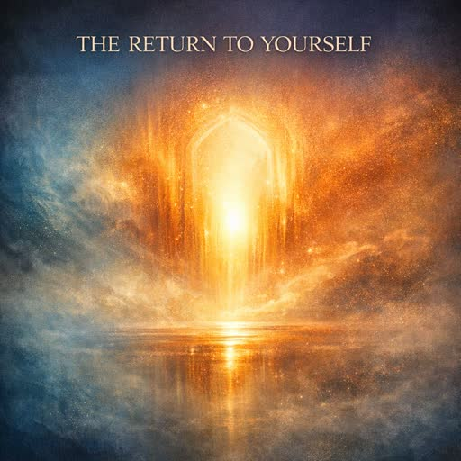

Live from the home studio · broadcasting around the clock
Vita Hueso Radio,
always on.
A continuous broadcast of original songs, guest voices from independent artists, ambient instrumentals and slow frequencies — your own station, running all day from this site.
- Original tracks
- 47
- Hours of music
- 2.7
- Records
- 6
- Genres
- 8
LIVE
Midnight Drift

I See God in You
Vita Hueso · I See God in You
Open the full playerTake the signal with you
Embed this station on your site
A small player that follows the same live broadcast, drops into any page, and needs nothing but the snippet below.
VH·SIGNAL · 24/7
The Radio
A single continuous broadcast. Skip and you step off the timeline — jump back in whenever you like.
LIVE
Midnight Drift
I See God in You
Vita Hueso · I See God in You · 2025
0:00
0:00
Live broadcast — position follows the station clock.
Today's programming
Every track on the station
Music Library
The full catalogue — originals and a handful of Creative Commons guests — searchable, sortable, always one tap from the player.
Nothing matches that. Try another word or genre.
Discography
Latest Releases
Four volumes of songs, one Spanish EP, and a small shelf of guest instrumentals. Every record plays straight into the live station.
Artwork gallery
The artist behind the signal
About Vita Hueso
Vita Hueso is the recording project of artistesoundbox — songs about rest, forgiveness, self-trust, and the quiet work of coming home to yourself.
The catalogue began as voice notes and voice-and-piano sketches, and grew into four volumes of songs plus a small Spanish EP. Some pieces are full productions; others are deliberately bare, close to the breath, closer to the room they were made in.
This station exists because the music should not need a platform's permission to be heard. Every file lives on this site. The player streams them directly, on a schedule that keeps running whether one person is listening or a thousand. No algorithm decides what comes next here — a clock and a catalogue do.
The only non-original music on the station is a small set of Creative Commons instrumentals, credited in full below and in CREDITS.md. They sit inside the rotation rather than replacing it: the station is, and stays, the artist's own work.
What the station plays
Credits & licenses
Open channel
Contact
Collaborations, licensing, or a note about a song that found you at the right time — it all lands in the same inbox.
Direct lines
All original music © Vita Hueso. Guest tracks are used under CC BY — see credits.